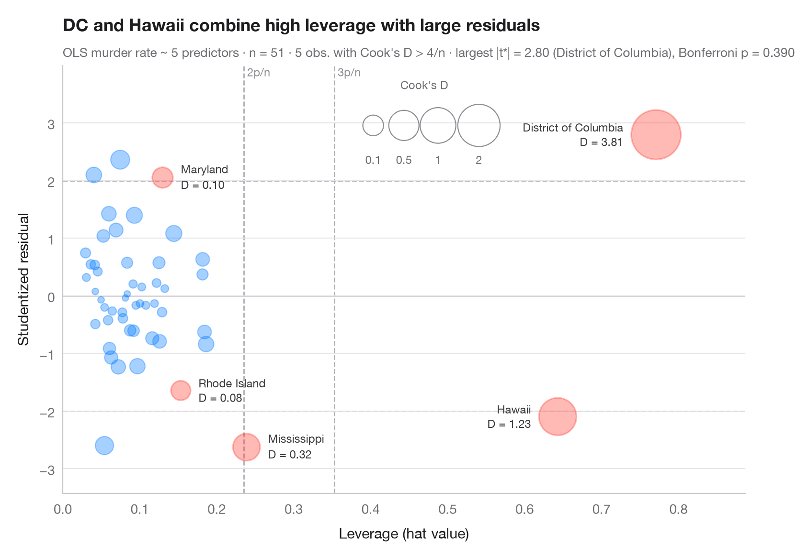

影响图
学生化残差对杠杆值，气泡大小由 Cook 距离决定。

当一个观测值既在预测变量上不寻常（高杠杆值，x 轴），又拟合不佳（学生化残差大，y 轴）时，它就是强影响点。气泡面积随综合二者的 Cook 距离增大（∝ √D，使极端值依然清晰可读）。虚线标出常用的经验阈值——杠杆值 2p/n 和 3p/n、学生化残差 ±2——Cook's D 超过 4/n 的观测值会被标注名称并着色。
模型使用 statsmodels OLS 解释美国 50 个州 + 哥伦比亚特区的谋杀率（sm.datasets.statecrime）。学生化（删除）残差、帽子值和 Cook 距离均来自 model.get_influence()；副标题像 car::outlierTest() 一样，用 Bonferroni 离群值检验来检查最大残差。
代码及图中文字均为英文。
import matplotlib.pyplot as plt
import numpy as np
import statsmodels.api as sm
import statsmodels.formula.api as smf
from scipy import stats
df = sm.datasets.statecrime.load_pandas().data
model = smf.ols("murder ~ poverty + single + urban + hs_grad + white", data=df).fit()
infl = model.get_influence()
rstud, lev, cook = infl.resid_studentized_external, infl.hat_matrix_diag, infl.cooks_distance[0]
n, p = int(model.nobs), int(model.df_model + 1)
flag = cook > 4 / n
fig, ax = plt.subplots(figsize=(8.5, 5.6))
# Rule-of-thumb thresholds
for h in (2 * p / n, 3 * p / n):
ax.axvline(h, color="#AEAEB2", lw=1, ls="--", zorder=0)
ax.text(h, 1.0, f" {round(h * n / p)}p/n", transform=ax.get_xaxis_transform(),
fontsize=8.5, color="#8E8E93", va="top")
for r in (-2, 0, 2):
ax.axhline(r, color="#AEAEB2" if r else "#C7C7CC", lw=1, ls="--" if r else "-", zorder=0)
# Bubbles: area proportional to √Cook's D (keeps extreme points readable)
area = lambda d: 20 + 700 * np.sqrt(d)
size = area(cook)
ax.scatter(lev[~flag], rstud[~flag], s=size[~flag], color="#007AFF", alpha=0.35,
edgecolor="#007AFF", lw=0.8)
ax.scatter(lev[flag], rstud[flag], s=size[flag], color="#FF3B30", alpha=0.35,
edgecolor="#FF3B30", lw=1.2)
for i in np.flatnonzero(flag):
right = lev[i] > 0.5 # far-right points: label on the left
ax.annotate(f"{df.index[i]}\nD = {cook[i]:.2f}", (lev[i], rstud[i]),
xytext=((-1 if right else 1) * (np.sqrt(size[i]) / 2 + 6), 0),
textcoords="offset points", ha="right" if right else "left", va="center",
fontsize=8.5, color="#3A3A3C", linespacing=1.1)
# Bubble-size key
for d, x in zip((0.1, 0.5, 1, 2), (0.455, 0.50, 0.55, 0.61)):
ax.scatter(x, 0.86, s=area(d), transform=ax.transAxes, color="none",
edgecolor="#8E8E93", lw=0.8)
ax.text(x, 0.77, f"{d:g}", transform=ax.transAxes, ha="center", fontsize=8.5, color="#6E6E73")
ax.text(0.53, 0.97, "Cook's D", transform=ax.transAxes, ha="center", va="top",
fontsize=8.5, color="#6E6E73")
ax.set_ylim(rstud.min() - 0.8, rstud.max() + 1.2)
ax.set_xlim(0, lev.max() * 1.15)
ax.set_xlabel("Leverage (hat value)")
ax.set_ylabel("Studentized residual")
ax.set_title("DC and Hawaii combine high leverage with large residuals", pad=26)
# Bonferroni outlier test on the largest |studentized residual|
k = np.argmax(np.abs(rstud))
p_bonf = min(1, n * 2 * stats.t.sf(abs(rstud[k]), model.df_resid - 1))
ax.text(0, 1.02, f"OLS murder rate ~ 5 predictors · n = {n} · {flag.sum()} obs. with Cook's D > 4/n · "
f"largest |t*| = {abs(rstud[k]):.2f} ({df.index[k]}), Bonferroni p = {p_bonf:.3f}",
transform=ax.transAxes, fontsize=9.5, color="#6E6E73")
plt.show()
图表使用了可选的 Statlas 样式：添加 plt.style.use("statlas.mplstyle") 即可完全还原其外观。
如何引用
Statlas 由 Thierry Warin 创建并维护。如果它对你的工作有所帮助，敬请引用。
Warin, T. (2026). Influence plot. In Statlas: The Python Gallery of Statistical Graphics. https://warint.github.io/statlas/model-diagnostics/influence-plot/
@misc{warin2026statlas,
author = {Warin, Thierry},
title = {Statlas: The Python Gallery of Statistical Graphics},
year = {2026},
howpublished = {\url{https://warint.github.io/statlas/}},
note = {Source code: https://github.com/warint/statlas}
}